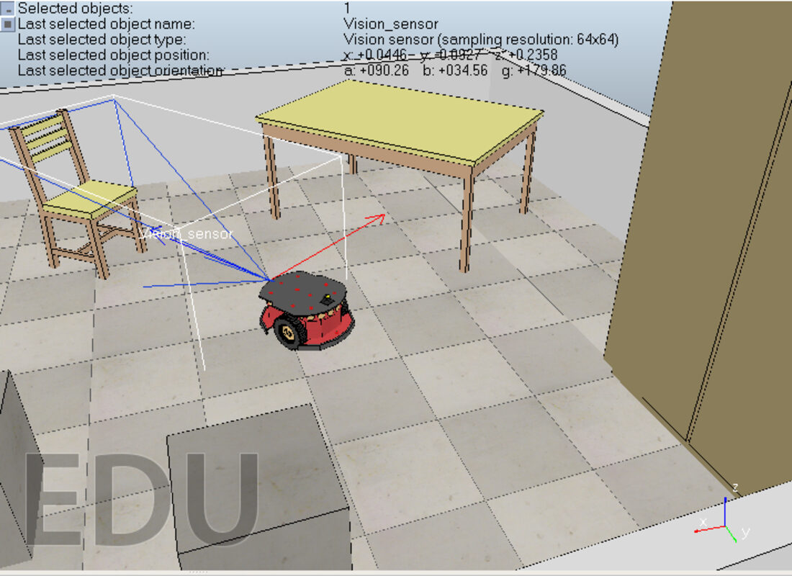
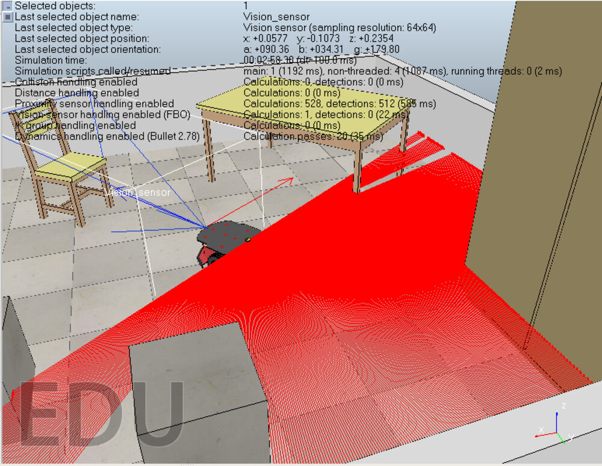
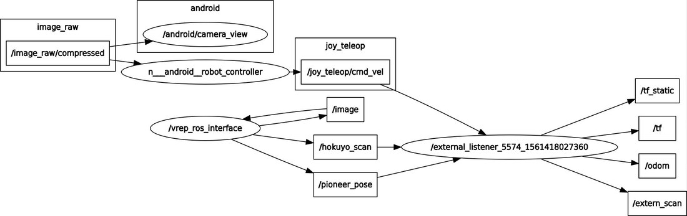
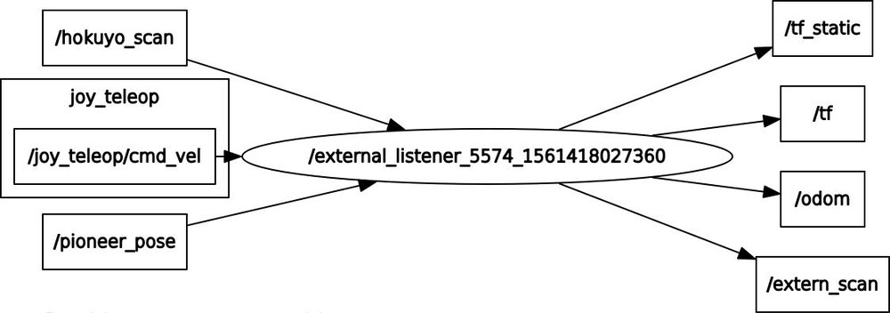
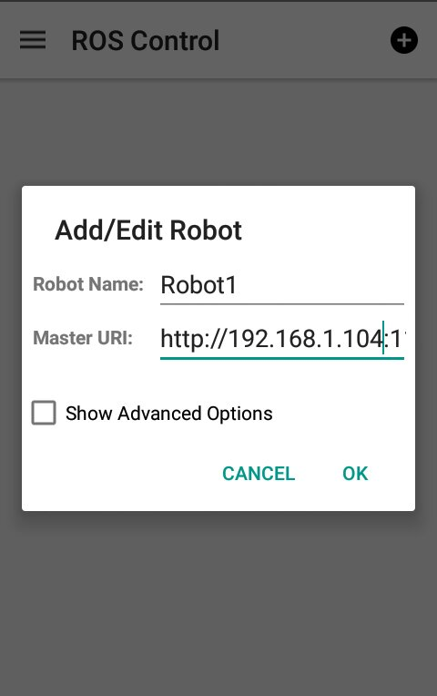
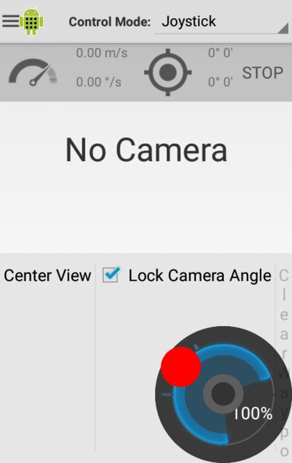
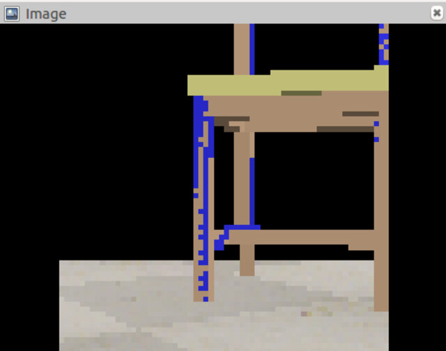

Teleoperated SLAM with a Pioneer P3-DX
A ROS project that drives a simulated Pioneer P3‑DX around a V‑REP scene from an Android phone, and feeds a simulated Hokuyo laser scanner into gmapping to build a 2D occupancy‑grid map. The custom part is a Python bridge node that reshapes V‑REP's topics into the odometry, TF and laser scan that ROS SLAM expects.
Overview
The robot lives in a V‑REP scene — a Pioneer P3‑DX differential‑drive base with a laser scanner and a small vision sensor, in a room with furniture. You drive it by keyboard or from the ROS Control Android app; the laser scan and the robot pose come back out of the simulator over ROS, and gmapping turns them into a map you watch build in RViz.

The Pioneer's laser scanner sweeping the V‑REP scene.
ROS Architecture
Three sources feed a single bridge node:
- V‑REP, through its
RosInterfaceplugin, publishes/hokuyo_scan(the laser),/pioneer_pose(ground‑truth pose) and/image(the vision sensor). - The ROS Control app publishes
/joy_teleop/cmd_velfrom its on‑screen joystick, and can also stream the phone's camera as/image_raw/compressed. - The bridge node (
external_teleop) subscribes to all of the above and republishes them in the form the rest of the stack needs.

The running node graph (rqt_graph).
The Bridge Node
V‑REP's topics aren't in the shape gmapping and the Android app expect — the scan has the wrong frame, there is no odometry, and there is no TF tree. subscriber_teleop.py fills those gaps:
| In | Out | What the node does |
|---|---|---|
/joy_teleop/cmd_vel | /pioneer_cmd_vel | passes the joystick Twist through to the V‑REP robot |
/hokuyo_scan | /extern_scan | re‑stamps the LaserScan into the base frame for gmapping |
/pioneer_pose | /odom, /tf, /tf_static | differentiates the pose into odometry and broadcasts the base → hokuyo transform |

The bridge node's inputs and outputs.
SLAM
With a laser scan, an odometry source and a valid TF tree in place, gmapping (a particle‑filter SLAM package) estimates the robot's trajectory and accumulates an occupancy‑grid map, published on /map and viewed in RViz. gmapping and its dependencies are built as part of the workspace.
Android Control
The ROS Control app connects straight to the ROS master. Add a robot, set its Master URI to the PC running roscore (its LAN IP, not localhost), and pick Joystick mode.


The phone's camera can also be published into ROS as a compressed image stream, which is why the workspace includes the image_transport and compressed_image_transport packages.
Vision Sensor
The scene also carries a low‑resolution vision sensor on the robot, published on /image — a forward camera view of the room, separate from the laser used for mapping.

The on‑board vision sensor feed.
Running It
Built for ROS Kinetic on Ubuntu, with V‑REP 3.x PRO EDU. Outline:
- Build the catkin workspace (
catkin build) and source it. - Copy the prebuilt
libv_repExtRosInterface.sointo the V‑REP folder so the simulator exposes ROS topics. - Start
roscore, then launch V‑REP and openscenes/slam_peoneer_p3dx_2.ttt; press play. - Run the bridge node:
rosrun external_teleop subscriber_teleop.py. - Connect the Android app (or use keyboard teleop) and drive; run gmapping + RViz to watch the map build.
The repository README has the full step‑by‑step, and the repo ships the V‑REP scene, the RosInterface plugin binaries and the prebuilt packages.
Notes
- Built on ROS 1 Kinetic and V‑REP, both now superseded by newer ROS distributions and CoppeliaSim — the ideas carry over but the exact commands do not.
- The odometry in the bridge node is a rough differentiation of the simulator pose; a cleaner version would integrate wheel velocities and add covariance.
- The committed workspace includes catkin
build/anddevel/artifacts and two large image files misnamed.msg— worth pruning from version control.
Posted In:
Robotics